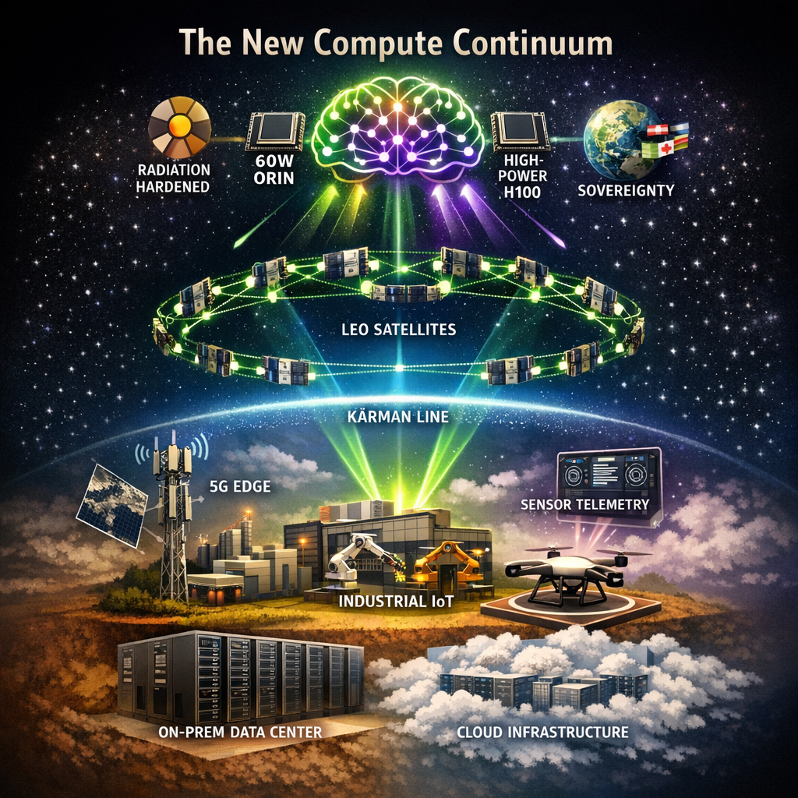

On April 13, 2026, Kepler Communications achieved something that infrastructure architects have been tracking for years. They launched the first operational commercial orbital AI compute cluster. This is not a proof-of-concept or a technology demonstration. It is a live, revenue-generating system processing real workloads for eighteen paying customers, including the U.S. military.
The deployment consists of 40 NVIDIA Jetson Orin edge processors distributed across 10 satellites, interconnected via laser links forming the first commercial mesh network in orbit. Processing happens in space. Data is not beamed to ground stations, processed terrestrially, and sent back up. These are actual compute cycles executing above the Kármán line.
This matters beyond the novelty. For decades, "edge computing" has been a terrestrial concept. It meant processing at the network periphery, closer to data sources than centralized cloud regions. But what happens when the edge itself moves? What happens when the ultimate edge node is not a factory floor server or a 5G base station, but a constellation whizzing through orbital space at 17,500 miles per hour?
Kepler's announcement represents a categorical expansion of what we mean by "distributed architecture." The question for AI/ML engineers and infrastructure architects is not whether orbital compute becomes relevant. The question is how quickly you need to understand it to remain current in your field.
The Compute Continuum
To understand why orbital AI matters, we need to examine the trajectory that brought us here. Distributed computing has not evolved randomly. It has followed a consistent pattern of pushing processing closer to data sources while balancing cost, latency, and sovereignty concerns.
The On-Premise Era (1980s to 2000s)
Enterprise computing began centralized. Data centers were physical fortresses with raised floors, precision cooling, and raised security clearances just to badge through the door. Applications ran where the hardware sat. Your Oracle cluster lived in Building C, Room 204, and that is where queries executed. Latency to the application was essentially zero, but scaling meant physical procurement. It required purchase orders, rack-and-stack deployments, and quarterly planning cycles measured in months.
This model had virtues. Data sovereignty was straightforward because your bits lived where you could point to them. Compliance audits meant walking an examiner to the server cage. But the model broke under internet-scale demands. When your e-commerce platform needed to handle massive traffic spikes during holiday shopping seasons, you could not exactly FedEx servers fast enough.
The Cloud Revolution (2006 to 2015)
The 2006 launch of AWS EC2 and S3 introduced a radical abstraction by treating computing as a utility. Capacity became elastic. You provisioned instances in minutes, not quarters. The geographic distribution question took on new dimensions like regions, availability zones, and edge caching via CDNs.
Cloud computing decoupled logical architecture from physical location. Your application ran in "us-east-1", which meant Northern Virginia, but you did not need to care precisely where. The cloud provider handled the hardware lifecycle, power, cooling, and network patching. You focused on code.
But this centralization had trade-offs. Every request traveled to a mega data center and back. For interactive applications, that meant a 50 to 100ms latency minimum. For bandwidth-intensive workloads like video processing, IoT telemetry aggregation, and autonomous vehicle sensor fusion, you were shipping massive data volumes into concentrated facilities and paying egress fees on the return trip.
The Edge Emergence (2015 to 2023)
Edge computing emerged from these constraints. The thesis was elegant: move computation to where data generates, not where it is cheapest to store. Factory floors got local servers processing sensor streams in real-time. Cellular towers began hosting GPU-equipped edge nodes. Smart cities deployed municipal compute cabinets for traffic optimization and emergency response.
The edge was defined by proximity. It was physically close to end-users and logically removed from cloud regions. Latency dropped to single-digit milliseconds for local processing. Bandwidth costs plummeted because you only shipped aggregated insights upstream, not raw telemetry.
But the terrestrial edge had limits. You could not build an edge node in the middle of the Pacific Ocean. Remote oil rigs, maritime vessels, aircraft in flight, and deployed military units remained served by satellite connectivity with round-trip latencies of 500ms or more. The edge had a geography problem.
Enter Orbital Compute (2024 to Present)
Kepler's deployment represents the next logical step in the compute continuum. If the edge is defined by proximity to data collection points, and those collection points are increasingly in space or remote locations best served by satellites, why not move the edge itself to orbit?
The orbital layer adds new variables to architectural decisions:
- Latency: 20 to 40ms for LEO satellite processing versus 500ms or more for ground round-trips.
- Coverage: Global reach without terrestrial infrastructure dependencies.
- Sovereignty: Data processing happens in international space, outside traditional jurisdictional boundaries.
- Bandwidth economics: Process data in orbit, transmit only the insights, and discard the raw data.
The compute continuum now extends from on-premise, to cloud regions, to the terrestrial edge, and finally to the orbital edge. Each layer optimizes for different constraints. Understanding when orbital processing wins versus terrestrial alternatives is becoming a core architectural competency.
Why Orbital Compute Now?
Space-based computing has been theoretically compelling for decades. What changed to make Kepler's April 2026 deployment technically and economically viable?
Terrestrial Constraints Reaching Limits
Three forces are converging to make orbital processing attractive:
1. Data Gravity in Reverse
Traditional architectures assumed data accumulates in centralized stores, a concept known as "data gravity". However, modern AI/ML pipelines generate such enormous training and inference datasets that shipping everything to cloud regions becomes cost-prohibitive.
Earth observation satellites illustrate this perfectly. A single commercial SAR satellite generates 1 to 2 TB of raw data daily. A constellation of 50 satellites produces up to 100 TB daily. At current cloud egress rates, moving this volume terrestrially runs into millions of dollars monthly. Processing the data in orbit and transmitting only derived insights completely reverses the economics.
2. Latency Requirements for Autonomous Systems
Real-time AI applications such as autonomous vehicles, drone swarms, and robotic systems cannot tolerate 500ms round-trip delays to cloud regions. Edge computing solved this terrestrially, but mobile platforms like aircraft, ships, and remote vehicles lack persistent connectivity.
Orbital processing offers a middle path with 20 to 40ms latency to LEO satellites, accessible anywhere on Earth via phased-array antennas. For time-critical inference like threat detection, navigation corrections, and collision avoidance, this latency profile changes what is technically feasible.
3. Sovereignty and Security Concerns
Data residency regulations are proliferating globally. Examples include GDPR in Europe, China's data localization laws, and sector-specific requirements in finance and healthcare. Orbital processing introduces interesting jurisdictional questions because international space is not subject to national laws in the traditional sense.
Military customers particularly value this attribute. Processing signals intelligence in orbit, with only derived products transmitted to the ground, creates natural compartmentalization. Kepler's U.S. military contracts likely leverage these specific characteristics.
Technical Maturation
Beyond market pull, a massive technology push has made orbital compute feasible:
- Radiation-hardened processors: NVIDIA's Jetson Orin delivers data-center-class inference in a 60W thermal envelope, and its rad-hard packaging enables multi-year orbital lifespans.
- Laser inter-satellite links: These have matured from experimental to operational. Kepler's satellites communicate via an optical mesh, achieving bandwidths impossible with RF links while avoiding spectrum allocation complexities.
- Small satellite costs: CubeSat and microsat architectures reduced launch costs from $50,000 per kilogram to under $5,000 per kilogram. Constellation deployment became economically rational.
- Ground station networks: Companies like Kratos and Kongsberg built turnkey ground station-as-a-service offerings, removing the need for proprietary satellite control infrastructure.
The convergence of market demand, technical capability, and economic feasibility created the perfect conditions for Kepler's April 2026 announcement.
Inside the Architecture
Understanding what Kepler built illuminates exactly how orbital AI systems differ from terrestrial equivalents.

Processing: Orin vs. H100
Kepler selected NVIDIA Jetson AGX Orin modules for their orbital cluster. This choice reveals key architectural priorities:
- Power: Orin operates at 60W max versus an H100's 700W. In space, every watt requires solar panel area and thermal dissipation capacity. Orbital power budgets are hard constraints, not optimization targets.
- Thermal management: Space has no atmosphere for convective cooling. Radiators must dissipate heat via infrared radiation, which is a slow process. A lower thermal design power directly translates to simpler thermal control.
- Radiation tolerance: Orin modules can be radiation-hardened economically. The massive transistor count and complex memory hierarchy of an H100 make space-grade variants prohibitively expensive, if technically feasible at all.
- Inference optimization: Orin's Tensor Cores target edge inference workloads, not training. Orbital compute currently focuses on processing sensor streams in real-time for tasks like object detection in Earth imagery, signal classification, and anomaly detection. It is not designed for training foundation models from scratch.
Starcloud's November 2025 demonstration of an H100 in space was technically impressive but illustrates different priorities. Their approach accepts higher power and complexity to enable training workloads in orbit. Kepler's architecture optimizes for operational sustainability over raw FLOPS.
Network: Laser Mesh vs. RF Backhaul
Kepler's 10-satellite constellation employs laser inter-satellite links, creating a mesh network in orbital space. This architectural choice matters significantly:
- Bandwidth: Optical links achieve 10 to 100 Gbps between satellites versus 1 to 10 Gbps for traditional RF. When coordinating processing across a distributed cluster, inter-node bandwidth constrains what algorithms work efficiently.
- Latency: Laser links have nanosecond propagation delays. RF links suffer speed-of-light delays plus protocol overhead. For distributed inference requiring satellite-to-satellite coordination, these differences compound.
- Security: Optical links do not bleed signal beyond the beam path. Intercepting laser communications requires physically positioning a receiver within the beam, which is detectably obvious. RF signals propagate broadly and are vulnerable to passive collection.
- Regulatory simplicity: Laser links avoid spectrum allocation negotiations with national regulators. The optical domain remains largely unregulated internationally, accelerating deployment timelines.
The mesh topology also provides vital resilience. Individual satellite failures do not partition the network because traffic automatically routes through the remaining nodes. This fault tolerance is crucial in orbital environments where hardware failures are probabilistic certainties over multi-year missions.
Software: Sophia Space's Orbital OS
The severe power, thermal, and bandwidth constraints of orbital hardware dictate a completely different approach to software abstractions. To manage this, Kepler partnered with Sophia Space for their orbital computing operating system. This software layer abstracts the harsh orbital environment from application developers:
- Fault tolerance: Satellites experience radiation-induced bit flips in memory and logic. Sophia's OS detects and corrects these without application-level awareness, providing reliable guarantees despite underlying hardware instability.
- Resource management: Power budgets fluctuate with orbital day and night cycles. Thermal constraints vary with sun exposure. The OS prioritizes workloads based on available resources, gracefully degrading service rather than hard-failing.
- Distributed processing: Applications see the 10-satellite cluster as a unified compute fabric. Sophia's stack handles work scheduling across nodes, data synchronization during visibility windows, and intermittent connectivity.
- Container orchestration: Modern AI/ML workflows expect standard deployment patterns. Sophia's OS provides orbital-compatible container runtimes, enabling engineers to target space infrastructure using familiar MLOps toolchains.
This software abstraction is crucial. Without it, every orbital AI application would require specialized aerospace engineering knowledge.
The Competitive Map
Kepler may have reached operational status first, but the orbital AI sector is attracting substantial investment and competitive positioning.
Starcloud: The Power-Optimistic Challenger
Starcloud's November 2025 demonstration lofted an NVIDIA H100 to orbit, marking the first data-center-grade GPU in space. Their $170 million Series A signals massive investor confidence in orbital AI's commercial potential. Their approach prioritizes raw compute capability over power efficiency, enabling specialized model training in orbit. The trade-off is higher power consumption and complex thermal management.
SpaceX: The Scale Threat
SpaceX's FCC filings reveal plans for one million satellite data centers. This dwarfs current constellation sizes, such as Kepler's 10 satellites and Starcloud's planned hundreds, by orders of magnitude. SpaceX brings unparalleled advantages in launch capacity, manufacturing volume, and vertical integration. When they enter operational phases, their scale advantages could reprice the entire market.
Amazon LEO: The Enterprise Play
Amazon's Project Kuiper "Leo" service is slated to launch in mid-2026. Amazon brings enterprise cloud credibility and integration with AWS ground services. Their positioning likely emphasizes hybrid workflows, enabling the seamless movement of compute between terrestrial AWS regions and orbital nodes.
Blue Origin: The Long-Term Bet
Blue Origin's "Project Sunrise" envisions over 50,000 satellites. This constellation scale approaches SpaceX's ambitions but is focused specifically on computing rather than communications. As of April 2026, Blue Origin has not operationalized orbital compute services, making the timeline for Sunrise speculative.
Positioning Summary:
- Kepler: Operational leadership in efficient edge inference.
- Starcloud: Maximum compute capability for specialized workloads.
- SpaceX: Future scale threat with integrated launch capacity.
- Amazon: Enterprise-friendly hybrid cloud integration.
- Blue Origin: Ambitious but unproven long-term vision.
What This Means for AI/ML Engineers
Orbital AI's emergence creates actionable implications for practicing engineers and architects.
New Application Categories
Several workload types become technically feasible only with orbital processing:
- Real-time Earth observation AI: Processing satellite imagery in orbit enables sub-minute detection of events like wildfire ignition, oil spills, illegal fishing, and military activity without waiting for ground station passes. Latencies drop from an hour to under two minutes.
- Maritime and aviation intelligence: Ships and aircraft can run AI models against sensor data with 20 to 40ms round-trips to orbital nodes. Autonomous navigation and threat detection become highly responsive where terrestrial connectivity lacks.
- Disaster response: When terrestrial infrastructure fails due to hurricanes, earthquakes, or conflict, orbital compute continues operating. Emergency response coordination maintains functionality when ground-based systems go dark.
- Global IoT aggregation: Low-power IoT devices everywhere on Earth can reach orbital compute nodes directly, bypassing terrestrial network dependencies and creating truly global sensor networks.
Architectural Decision Framework
When should you consider orbital compute in your designs?
Consider orbital when:
- Data sources are globally distributed with limited terrestrial connectivity (remote sensors, maritime assets, aircraft).
- Real-time inference requirements exceed 100ms latency tolerance, but sources lack persistent cloud connectivity.
- Processing raw data volumes exceed terrestrial bandwidth economics (video streams, SAR imagery, RF signals).
- Sovereignty or security requirements favor processing in international space.
- Resilience requirements demand operation through terrestrial infrastructure failures.
Probably avoid orbital when:
- Sub-10ms latency is required (terrestrial edge or on-device processing wins).
- Workloads are training-intensive (current orbital capacity strongly favors inference).
- Cost optimization is the primary goal (terrestrial compute remains cheaper for most general workloads).
- Rapid iteration is required (orbital deployments update on satellite constellation timescales, not continuous deployment cadences).
The hybrid approach will likely dominate. Architects will process time-critical, bandwidth-intensive workloads in orbit, ship derived data to cloud regions for deeper analysis, and maintain terrestrial infrastructure for latency-sensitive user-facing services.
MLOps Implications
Orbital AI requires specific adaptations to standard MLOps practices:
- Model deployment: Rolling updates to constellations happen on orbital mechanics schedules, not customer demand.
- Monitoring and observability: Understanding model performance requires correlating compute outputs with orbital environmental conditions, including thermal status and power budgets.
- Data versioning: Training data collected in orbit has unique provenance requirements, such as sensor calibration, orbital position, and solar activity affecting radiation levels.
- Hardware heterogeneity: Models must run across processors with varying radiation exposure ages. A 4-year-old Orin module behaves differently than a newly launched replacement.
These are not insurmountable; they are extensions of edge deployment challenges engineers already solve terrestrially.
The 36-Month Question
In October 2024, Elon Musk posted that "AI training will move to space within 36 months because of energy and cooling constraints." At the time, this seemed characteristically ambitious, representing typical Musk timeline optimism applied to orbital physics.
With Kepler's April 2026 operational deployment, we are witnessing the early phases of this transition. But we need to reality-check the prediction.
Energy: Partially Validated
Orbital solar energy is abundant and continuous in the sun. However, orbital energy is not free. Solar arrays add mass, launch cost, and complexity. Power budgets strictly constrain processor choices. We are seeing the Orin, not the H100, in operational constellations precisely because energy is not unlimited. Training-scale AI in orbit requires multi-megawatt power availability. Current satellite buses deliver kilowatts.
Cooling: Validated
Space offers the ultimate cold sink with infinite heat capacity. Radiative cooling eliminates the energy-intensive chillers terrestrial data centers require. However, thermal management in a vacuum is complex. High thermal design processors need substantial radiator area, adding mass and launch cost.
The Reality Check
Musk's 36-month timeline for AI training in orbit seems aggressive given the current April 2026 status. The gap between inference (Kepler today) and training (Musk's prediction) is substantial. Training requires orders of magnitude more compute, memory, and inter-processor communication. Current operational orbital constellations lack these capabilities.
What is plausible by October 2027 is a market of multiple operational orbital inference providers, early training demonstrations on specialized high-power satellites, and declining cost curves. What is unlikely by October 2027 is massive training clusters competitive with terrestrial GPU farms or price parity between orbital and terrestrial AI compute.
The transition is real but gradual. The actual technology maturation for training-scale operations will likely require closer to 60 or 96 months.
Conclusion
Kepler's April 2026 milestone is not the end state. It is the opening move. The orbital AI sector will evolve through capability phases: inference today, specialized training tomorrow, and general-purpose training eventually.
Edge computing, long a terrestrial concept, has officially escaped Earth's atmosphere. The compute continuum now extends through on-premise, cloud regions, the terrestrial edge, and orbital platforms. Each layer optimizes for different constraints of latency, coverage, sovereignty, and economics.
For AI/ML engineers, this expansion creates entirely new architectural possibilities. The question shifts from "can we process this centrally?" to "which layer of the compute continuum optimizes for our specific constraints?" Mina Mitry, Kepler's CEO, captured the transformation perfectly: "Edge processing to enhance responsiveness by processing data at the point of collection."
That point of collection increasingly includes orbital altitudes. The infrastructure architects who understand this continuum, from the server cage to the satellite, will design the systems defining AI's next decade.
The edge has left Earth. Architecture must follow.
Get More Articles Like This
Understanding orbital AI is just the beginning. I'm documenting the full compute continuum—from on-premise to orbit—as it reshapes infrastructure architecture.
Subscribe to receive updates when we publish new content. No spam, just real analysis from the trenches.